Clarity Phase 1 - before and after Actual isolated Android captures on API26. All records are fictional. Before: accepted baseline at default device width (~411 dp). After: 390 dp or 320 dp/2.0x; system dark-mode captures have a dark suffix. Some captures are scrolled to the relevant control. Keyboard images capture the app viewport above a real keyboard, not the keyboard itself.
Income 120,000; expenses 45,000; cash surplus 75,000. A pending 750 does not change those confirmed totals.
Implementation, verification and limitations
after add expense dark 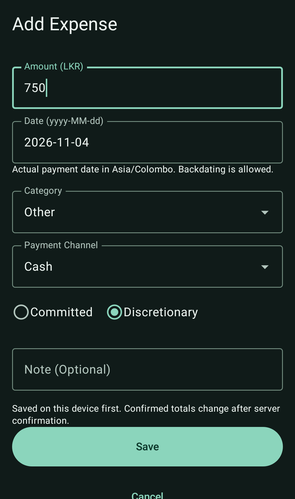
App-only capture. No live financial data. Open for full resolution. after add expense App-only capture. No live financial data. Open for full resolution. after history dark 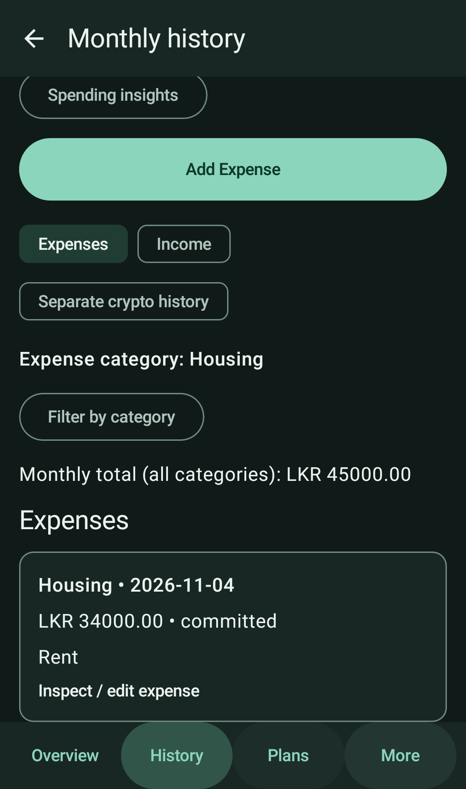
App-only capture. No live financial data. Open for full resolution. after history 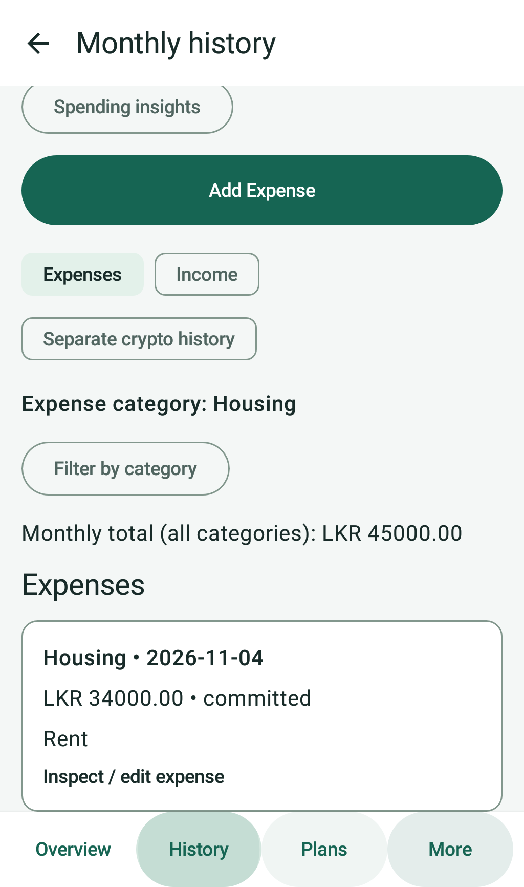
App-only capture. No live financial data. Open for full resolution. after inspection dark 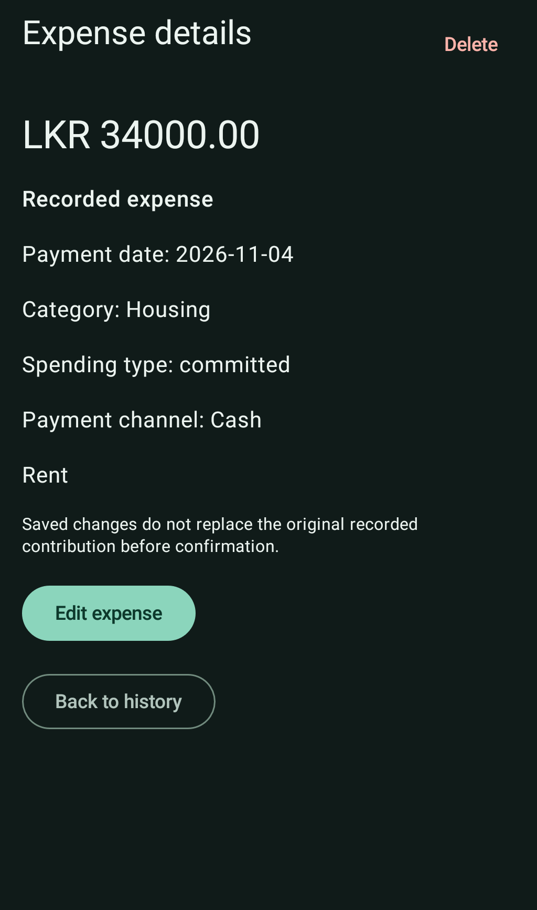
App-only capture. No live financial data. Open for full resolution. after inspection App-only capture. No live financial data. Open for full resolution. after keyboard 2x 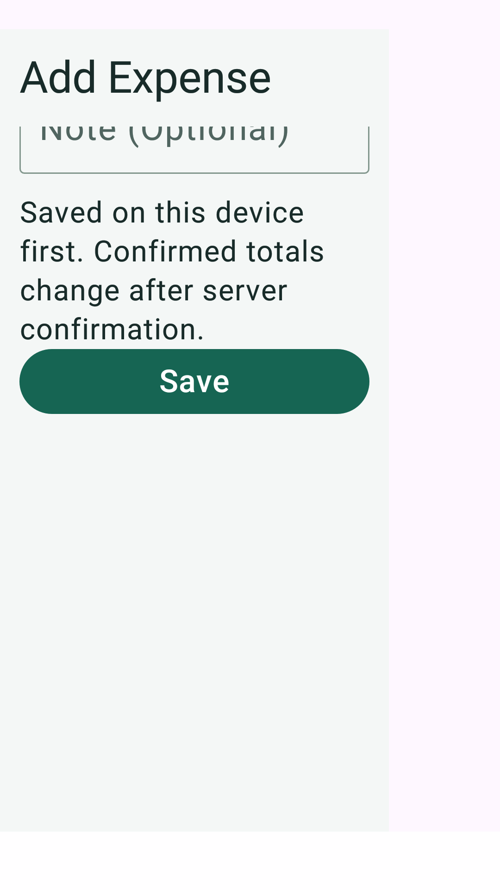
App-only capture. No live financial data. Open for full resolution. after narrow 2x form 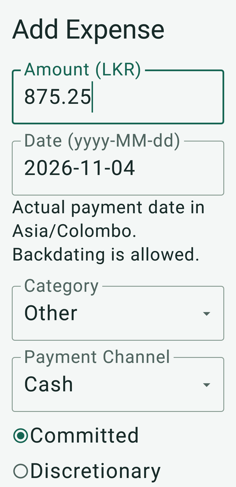
App-only capture. No live financial data. Open for full resolution. after narrow 2x inspection 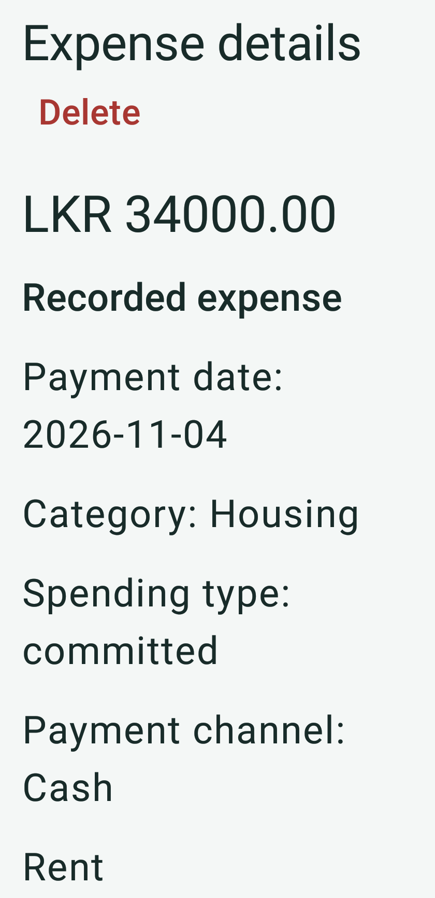
App-only capture. No live financial data. Open for full resolution. after overview dark 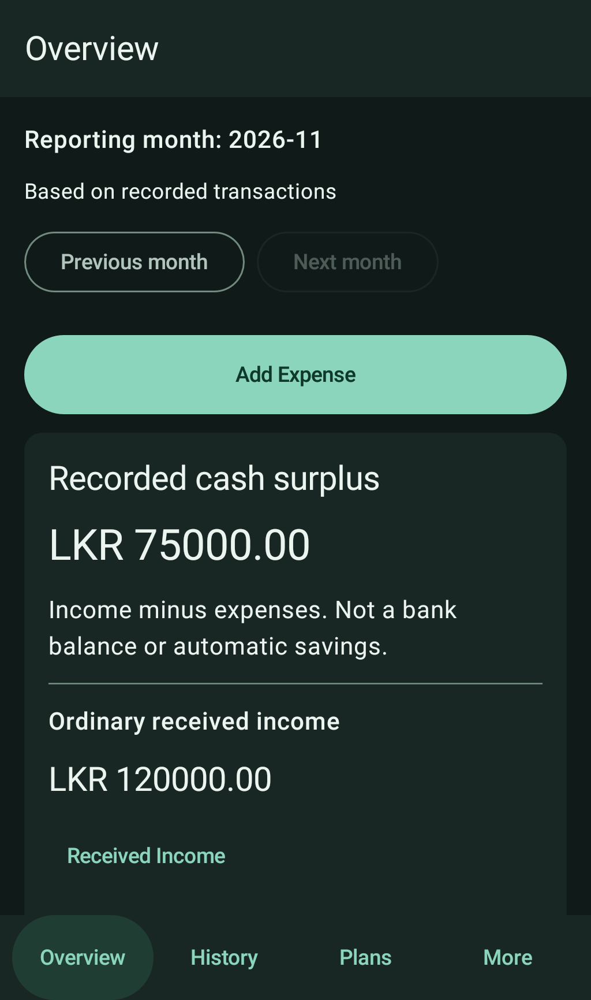
App-only capture. No live financial data. Open for full resolution. after overview 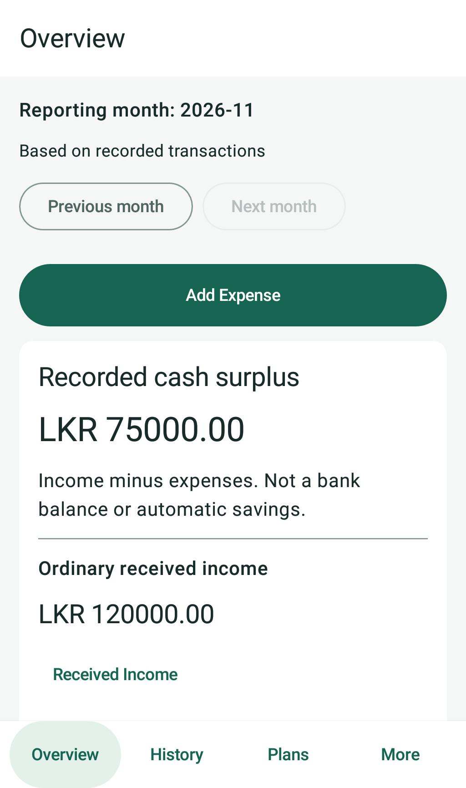
App-only capture. No live financial data. Open for full resolution. after pending dark 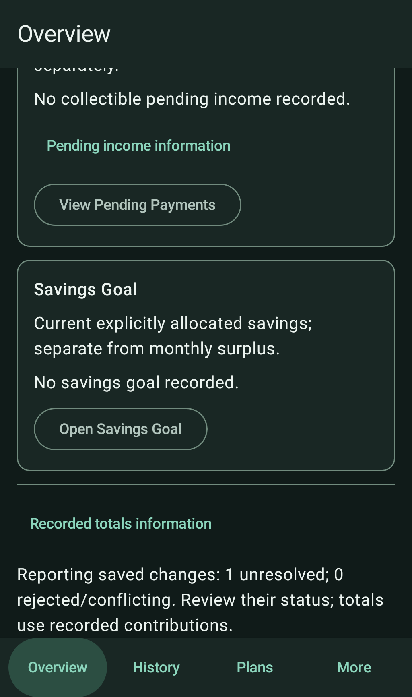
App-only capture. No live financial data. Open for full resolution. after pending 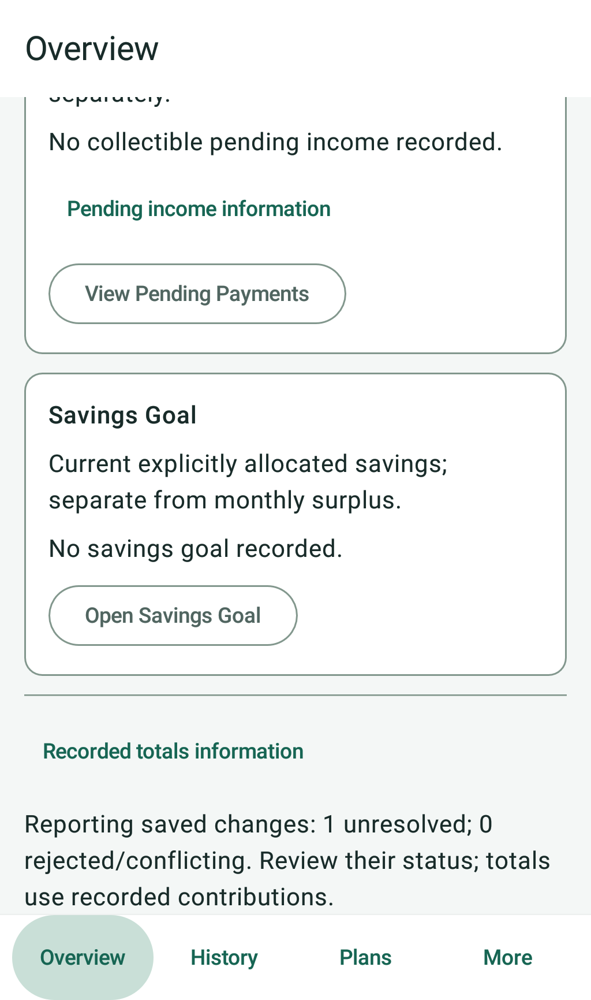
App-only capture. No live financial data. Open for full resolution. after unavailable cached 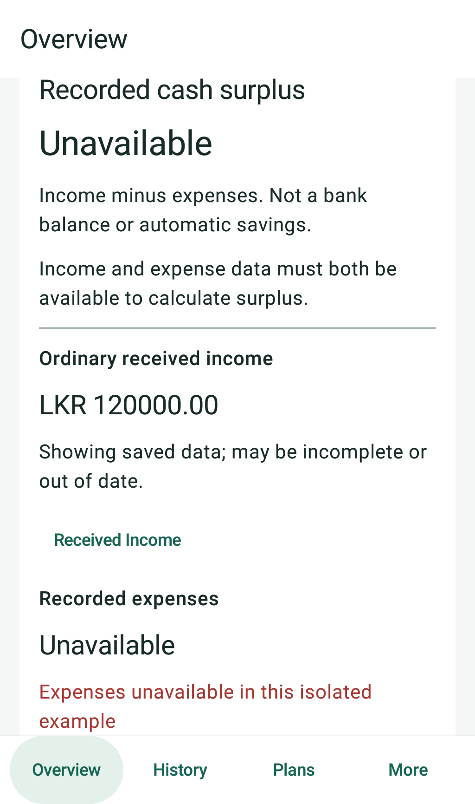
App-only capture. No live financial data. Open for full resolution. before history 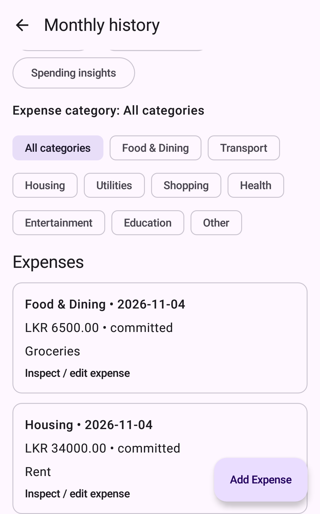
App-only capture. No live financial data. Open for full resolution. before inspection 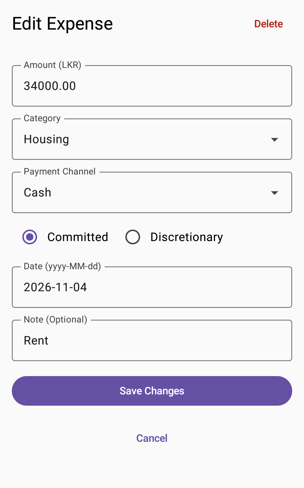
App-only capture. No live financial data. Open for full resolution. before overview 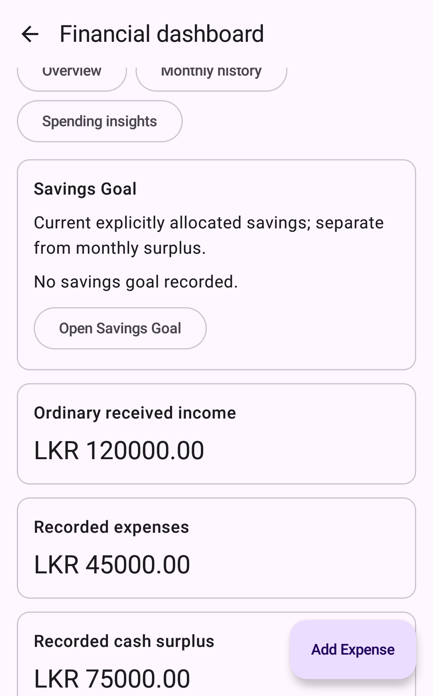
App-only capture. No live financial data. Open for full resolution.